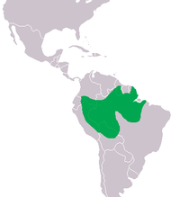
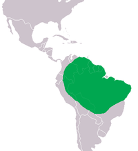

| Espécie |
Distribuição Geográfica |
Estado na IUCN |
Descrição |
| Jacaré-Americano |
 |
Pouco Preocupante |
Espécie amplamente distribuída pelo sudeste dos Estados Unidos. Machos medem no máximo 4,5 m de comprimento
e as fêmeas medem até 3 m. Habita pântanos, lagos e banhados, ocorrendo em menor densidade ao longo de rios.
São capazes de sobreviver a temperaturas abaixo de zero. |
| Jacaré-Açu |
 |
Dependente de Conservação |
É a maior espécie de jacaré, podendo medir até 5 m de comprimento, sendo amplamente distribuído pela bacia
do rio Amazonas e habitando qualquer ecossistema associado a água. Já esteve muito ameaçado de extinção,
tendo sua população aumentado nas últimas décadas, principalmente no Brasil,
por conta da proibição da caça. |
| Jacaré-Anão |
 |
Pouco Preocupante |
Espécie de pequeno porte que ocorre nas bacias dos rios Amazonas e Orinoco no norte e entre as bacias dos rios
Paraguai e Paraná e do São Francisco. É considerado o menor crocodiliano, dificilmente ultrapassando 1,6 m de
comprimento, apesar de registros de até 2 m de comprimento. |